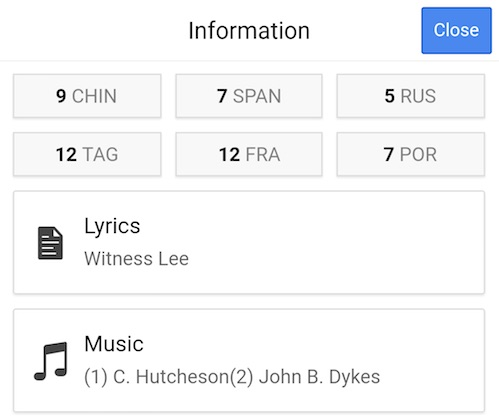
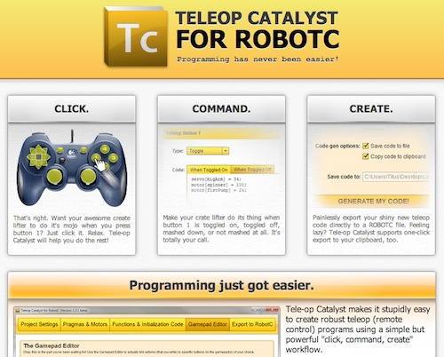
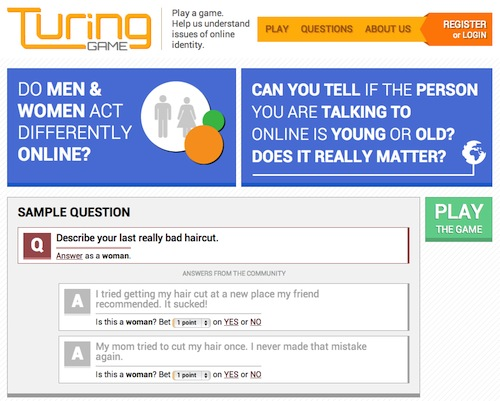

Ambitious, Enthusiastic, Developer.
I'm a programmer and designer based in Atlanta, GA. I love building beautiful and responsive applications using the latest web technologies.
Email: saleh@shamadeh.com
Phone: 404-661-3779


Education
Georgia Institute of Technology
Spring 2014 - present
B.S. Computer Science, Devices and Modeling/Simulation
Kennesaw State University
Fall 2012 - Fall 2013
B.S. Computer Science
Skills
Technical
JavaScript, PHP 5, HTML5, CSS3, Java, C#, Jade, TypeScript, LESS, SCSS, Stylus, AngularJS, jQuery, Ionic Framework, Cordova, Grunt, Gulp, Bower, Jasmine, Node.js, ASP.NET MVC.
Design
Photoshop, Illustrator, InDesign, Premier Pro, After Effects.
Experience
Software Developer Intern, BrainJocks
January 2014 - January 2015
I made a RESTful API for a large Silverlight application with a C# back-end. I also worked on a responsive thin client written in HTML5/CSS/JavaScript which uses the aforementioned API. The core business logic was written in C#, with unit testing done in Jasmine and the MS Unit Testing Framework. The thin-client web app was written in TypeScript, AngularJS, jQuery, Bootstrap, and LESS.
Calculus III Tutor, Academic Coach Tutoring
January 2014 - February 2014
I created a beautiful, engaging, and responsive website and user experience for a web-based project written in PHP. I also wrote a sophisticated PHP survey for a research study.
Physics Tutor, Club Z Tutoring Services
November 2013 - January 2014
I coordinated and provided networking, computer access, and IT support services for a month-long, prestigious science camp. My responsibilities also included mentoring students, teaching, organizing, and overseeing classes.
Web Development Student Assistant, Kennesaw State University
April 2013 - November 2013
I coordinated and provided networking, computer access, and IT support services for a month-long, prestigious science camp. My responsibilities also included mentoring students, teaching, organizing, and overseeing classes.
Projects

Diclopedia
Beautiful hymnal reader for Android and the web.
A beautiful e-reader for the LSM hymnal with quick navigation features and a beautiful user interface. Bookmark your favorite hymns and customize the interface with full-screen, dark and light viewing modes.

Chat Cloud
Programming has never been easier.
Tele-op Catalyst makes it stupidly easy to create robust teleop (remote control) programs for the FIRST Tech Challenge using a simple but powerful "click, command, create" workflow. With Catalyst, you can get your robot running in minutes, with little to no programming experience.

Euler's Method Graph
Helping people explore issues of identity and stereotypes.
I overhauled the visual aesthetic and core user experience of a Georgia Tech research project, creating a beautiful and intuitive experience that people love using.
Leadership
Technical Officer, GT Web Dev
I give talks on a variety of web development topics, ranging from the basics of HTML and CSS to advanced topics like building and consuming RESTful web services and making SPA apps. I'm also heavily involved in curriculum development and planning for each semester's talks and events.
Competitor, HackGT 2014
I lead and organized a national week-long, residential academy that taught participants about aircraft manufacturing and maintenance on the live production floor. I managed, coordinated, and organized transportation, scheduling, activities, housing, meals, paperwork, special guests, press releases, and a plethora of other logistical tasks. The academy was very successful and lead to an award.
Competitor, MHacks 2014
I lead and organized a national week-long, residential academy that taught participants about aircraft manufacturing and maintenance on the live production floor. I managed, coordinated, and organized transportation, scheduling, activities, housing, meals, paperwork, special guests, press releases, and a plethora of other logistical tasks. The academy was very successful and lead to an award.
Development Lead, Association for Computing Machinery Chapter
I lead a squadron of cadets, organized cadet programs, maintained discipline and professionalism, and restructured the squadron to significantly increase engagement and boost attendance. I also co-developed the aerospace education curriculum (which included creating an interactive quiz application, lecture material, activities, handouts, and activities).
Honors & Awards
KSU Emerging Writer's Competition 2013 - 1st Place Winner
My creative non-fiction essay "My Role Model: The Radio Man" won the first place award in the writing contest. In that essay, I narrated different scenes from my life with my uncle (my role model). The essay shows how I first met him, what I learned from him, and what made him unique in my eyes. My essay is published in "Emerging Writers 2012-2013" and can be found in Kennesaw State University's bookstore.
ACM Southeast Regionals 2012 - 3rd Place Winner
My team won the third place award in ACM's ICPC at Georgia Institute of Technology. During the competition, the participants have five hours to write programs that can solve advanced mathematical problems. These problems required solid knowledge of the number theory, graph theory, and other artificial intelligence principles.